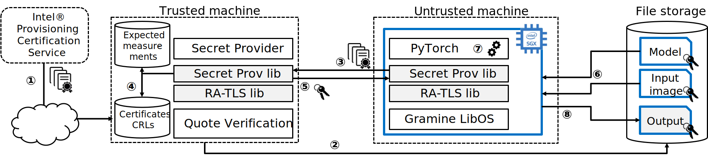

PyTorch PPML Framework Tutorial¶
Note
This tutorial works with the latest Gramine master branch (commit “[LibOS] Add fadvise64 syscall implementation” as of the date of this writing), but unfortunately not with the latest stable release (v1.2).
This tutorial presents a framework for developing PPML (Privacy-Preserving Machine Learning) applications with Intel SGX and Gramine. We use PyTorch as an example ML framework. However, this tutorial can be applied to other ML frameworks like OpenVINO, TensorFlow, etc.
Introduction¶
Machine Learning (ML) is increasingly utilized in many real-world applications. ML algorithms are first trained on massive amounts of known past data and then deployed to interpret unknown future data, which allows us to forecast weather, classify images, recommend content, and so on.
As machine learning pervades our daily lives, privacy concerns emerge as one of the key issues about this technology. In this tutorial, we focus on protecting the confidentiality and integrity of the input data when the computation takes place on an untrusted platform such as a public cloud virtual machine. We also protect the model for cases where the model owner is concerned about protecting their IP. In particular, we highlight how to build the PPML framework based on PyTorch in an untrusted cloud using Intel SGX and Gramine.

In general, ML workloads have two phases: training and inference. Both can be viewed as an application that takes inputs and produces an output. Training applications take a training dataset as input and produce a trained model. Inference applications take new data and the trained model as inputs and produce the result (the prediction).
The goal of this tutorial is to show how these applications – PyTorch workloads in particular – can run in an untrusted environment (like a public cloud), while still ensuring the confidentiality and integrity of sensitive input data and the model. To this end, we use Intel SGX enclaves to isolate PyTorch’s execution to protect data confidentiality and integrity, and to provide a cryptographic proof that the program is correctly initialized and running on legitimate hardware with the latest patches. We also use Gramine to simplify the task of porting PyTorch to SGX, without any changes to the ML application and scripts.
{kind=link}
In this tutorial, we will show the complete workflow for PyTorch running inside an SGX enclave using Gramine and its features of Secret Provisioning and Encrypted Files. We rely on the ECDSA/DCAP remote attestation scheme developed by Intel for untrusted cloud environments.
To run the PyTorch application on a particular SGX platform, the owner of the SGX platform must retrieve the corresponding SGX certificate from the Intel Provisioning Certification Service, along with Certificate Revocation Lists (CRLs) and other SGX-identifying information (1). Typically, this is a part of provisioning the SGX platform in a cloud or a data center environment, and the end user can access it as a service (in other words, the end user doesn’t need to deal with the details of this SGX platform provisioning but instead uses a simpler interface provided by the cloud/data center vendor).
As a second preliminary step, the user must encrypt the input and model files with her encryption key and send these encrypted files to the remote storage accessible from the SGX platform (2).
Next, the remote platform starts PyTorch inside of the SGX enclave. Meanwhile, the user starts the secret provisioning application on her own machine. The two machines establish a TLS connection using RA-TLS (3), the user verifies that the remote platform has a genuine up-to-date SGX processor and that the application runs in a genuine SGX enclave (4), and finally provisions the encryption key to this remote platform (5).
After the encryption key is provisioned, the remote platform may start executing the application. Gramine uses Encrypted FS to transparently decrypt the input and the model files using the provisioned key when the PyTorch application starts (6). The application then proceeds with execution on plaintext files (7). When the PyTorch script is finished, the output file is encrypted with the same encryption key and saved to the cloud provider’s file storage (8). At this point, the encrypted output may be forwarded to the remote user who will decrypt it and analyze its contents.
Prerequisites¶
Ubuntu 18.04. This tutorial should work on other Linux distributions as well, but for simplicity we provide the steps for Ubuntu 18.04 only.
Please install the following dependencies:
sudo apt-get install libnss-mdns libnss-myhostname
PyTorch (Python3). PyTorch is a framework for machine learning based on Python. Please install PyTorch before you proceed (don’t forget to choose Linux as the target OS). It may be necessary to install under root user, in this case use
sudo -E -H pip3 install ....Intel SGX Driver. This tutorial assumes a modern Linux kernel (at least 5.11). If the Linux kernel is older than this, then the user must install the out-of-tree SGX driver manually, following e.g. our documentation: https://gramine.readthedocs.io/en/latest/devel/building.html#install-the-intel-sgx-driver
SDK/PSW. You need a machine that supports Intel SGX and FLC/DCAP. Please follow this guide to install the Intel SGX driver and SDK/PSW.
Gramine. Unfortunately, the latest stable release (v1.2) has a bug that prevents correct execution of this tutorial. Please follow the Building docs to build and install the latest Gramine version.
Executing Native PyTorch¶
We start with a very simple example script written in Python3 for PyTorch-based ML inferencing. Gramine already provides a minimalistic and insecure PyTorch example which does not have confidentiality guarantees for input/output files and does not use remote attestation. In this tutorial, we will use this existing PyTorch example as a basis and will improve it to protect all user files.
Go to the directory with Gramine’s PyTorch example:
git clone https://github.com/gramineproject/examples.git
cd examples/pytorch
The directory contains a Python script pytorchexample.py and other relevant
files. The script reads a pretrained AlexNet model and an image
input.jpg, and infers the class of an object in the image. Then, the script
writes the top-5 classification results to a file result.txt.
We first download and save the pre-trained AlexNet model:
python3 download-pretrained-model.py
This command uses the download-pretrained-model.py script to download a
pretrained model and save it as a serialized file alexnet-pretrained.pt.
See Saving and Loading Models in PyTorch for more
details.
Now simply run the following command to run PyTorch inferencing:
python3 pytorchexample.py
This will execute native PyTorch which will write the classification results to
result.txt. The provided example image is a photo of a dog, therefore the
output file contains “Labrador retriever” as a first result.
In later sections, we will run exactly the same Python script but with Gramine and inside SGX enclaves.
Executing PyTorch with Gramine¶
In the next two sections, we will run the exact same PyTorch example with Gramine. We will first run PyTorch with non-SGX Gramine (for illustrative purposes) and then with SGX-backed Gramine. Note that this part of the tutorial still only shows the non-PPML workflow where Gramine doesn’t protect input/output user files; the end-to-end PPML workflow will be described below.
The porting effort to run PyTorch in Gramine is minimal and boils down to creation of the Gramine PyTorch-specific manifest file. When Gramine runs an executable, it reads a manifest file that describes the execution environment including the security posture, environment variables, dynamic libraries, arguments, and so on. In the rest of this tutorial, we will create this manifest file and explain its options and rationale behind them. Note that the manifest file contains both general non-SGX options for Gramine and SGX-specific ones. Please refer to this for further details about the syntax of Gramine manifests.
Executing PyTorch with non-SGX Gramine¶
Let’s run the PyTorch example using Gramine, but without an SGX enclave.
Navigate to the PyTorch example directory we examined in the previous section:
cd examples/pytorch
Let’s take a look at the template manifest file pytorch.manifest.template
(recall that PyTorch is a collection of libraries and utilities but it uses
Python as the actual executable). For illustrative purposes, we will look at
only a few entries of the file. Note that we can simply ignore SGX-specific keys
(starting with the sgx. prefix) for our non-SGX run.
Notice that the manifest file is not secure because it propagates untrusted command-line arguments and environment variables into the enclave. We keep these work-arounds in this tutorial for simplicity, but this configuration must not be used in production:
loader.insecure__use_cmdline_argv = true
loader.insecure__use_host_env = true
We mount the entire glibc host-level directory to the /lib directory seen
inside Gramine. This trick allows to transparently replace standard C libraries
with Gramine-patched libraries:
fs.mounts = [
{ uri = "file:{{ gramine.runtimedir() }}", path = "/lib" },
...
]
We also mount other directories such as /usr and /etc required by Python
and PyTorch (they search for libraries and utility files in these system
directories).
Finally, we mount the path containing the Python and Pytorch packages installed via pip:
fs.mounts = [
...
{ uri = "file:{{ pillow_path }}", path = "{{ pillow_path }}" },
]
Now we can run make to build/copy all required Gramine files:
make
This command will autogenerate the non-SGX Gramine manifest (pytorch.manifest)
from the template manifest file. Gramine will parse pytorch.manifest upon
startup to prepare an environment in which PyTorch will be executed (e.g., which
host directories to mount and which environment variables to set).
Let’s also remove the file result.txt (it should exist from the previous
native run). Otherwise in case Gramine fails for unrelated reasons, the file
will misleadingly be present. So let’s remove it unconditionally:
rm -f result.txt
Now, launch Gramine via gramine-direct. You can simply append the
arguments after the application path. Our example takes
pytorchexample.py as an argument:
gramine-direct ./pytorch pytorchexample.py
That’s it. You have run the PyTorch example with Gramine. You can check
result.txt to make sure it ran correctly.
Executing PyTorch with Gramine in SGX Enclave¶
In this section, we will learn how to use Gramine to run the same PyTorch
example inside an Intel SGX enclave. Let’s go back to the manifest template
(recall that the manifest keys starting with sgx. are SGX-specific syntax;
these entries are ignored if Gramine runs in non-SGX mode).
Below, we will highlight some of the SGX-specific manifest options in
pytorch.manifest.template. SGX syntax is fully described here.
First, here are the following SGX-specific lines in the manifest template:
sgx.trusted_files = [
"file:{{ gramine.libos }}",
"file:{{ entrypoint }}",
"file:{{ gramine.runtimedir() }}/",
...
]
sgx.trusted_files specifies a list of files and directories that will be
hashed during the generation of the final SGX manifest file (using the
utility gramine-sgx-sign) and appended to this manifest file. In
runtime they will be allowed to be read only if the hash matches. In the case
of directories they are recursively traversed and all files inside them are
hashed.
The PyTorch manifest template also contains sgx.allowed_files list. It
specifies a single file unconditionally allowed by the enclave:
sgx.allowed_files = [
"file:result.txt"
]
Allowed files are not cryptographically hashed and verified. Thus, this is insecure and discouraged for production use (unless you are sure that the contents of the files are irrelevant to security of your workload). In the following section, we will remove the list of allowed files completely.
Now we desribed how the manifest template looks like and what the SGX-specific manifest entries represent. Let’s prepare all the files needed to run PyTorch in an SGX enclave:
make SGX=1
The above command performs the following tasks:
- Generates the final SGX manifest file
pytorch.manifest.sgx. - Signs the manifest and generates the SGX signature file containing SIGSTRUCT
(
pytorch.sig). - Creates a dummy EINITTOKEN token file
pytorch.token(this file is used for backwards compatibility with SGX platforms with EPID and without Flexible Launch Control).
Let’s also remove the file result.txt (it should exist from the previous
gramine-direct run):
rm -f result.txt
After running the above commands and building all the required files, we can use gramine-sgx to launch the PyTorch workload inside an SGX enclave:
gramine-sgx ./pytorch pytorchexample.py
It will run exactly the same Python script but inside the SGX enclave. Again,
you can verify that PyTorch ran correctly by examining result.txt.
End-To-End Confidential PyTorch Workflow¶
Background on Remote Attestation, RA-TLS and Secret Provisioning¶
Intel SGX provides a way for the SGX enclave to attest itself to the remote user. This way the user gains trust in the SGX enclave running in an untrusted environment, ships the application code and data, and is sure that the correct application was executed inside a genuine SGX enclave. This process of gaining trust in a remote SGX machine is called Remote Attestation (RA).
Gramine has two features that transparently add SGX RA to the application: (1) RA-TLS augments normal SSL/TLS sessions with an SGX-specific handshake callback, and (2) Secret Provisioning establishes a secure SSL/TLS session between the SGX enclave and the remote user so that the user may gain trust in the remote enclave and provision secrets to it. Secret Provisioning builds on top of RA-TLS and typically runs before the application. Both features are provided as opt-in libraries.
The Secret Provisioning library
provides a simple non-programmatic API to applications: it transparently
initializes the environment variable SECRET_PROVISION_SECRET_STRING with a
secret obtained from the remote user during remote attestation (note that
SECRET_PROVISION_CONSTRUCTOR must also be set). In our PyTorch example, the
provisioned secret is the encryption key to encrypt/decrypt user files. To
inform Gramine that the obtained secret is indeed the key for file encryption,
it is enough to set the environment variable SECRET_PROVISION_SET_KEY.
Note that RA-TLS and Secret Provisioning work both with the EPID-based and the ECDSA/DCAP schemes of SGX remote attestation. Since this tutorial concentrates on an untrusted-cloud scenario, we use the ECDSA/DCAP attestation framework.
Background on Encrypted Files¶
Gramine provides a feature of Encrypted Files, which encrypts files and transparently decrypts them when the application reads or writes them. Integrity- or confidentiality-sensitive files (or whole directories) accessed by the application must be put under the “encrypted” FS mount in the Gramine manifest. New files created in the “encrypted” FS mount are automatically treated as encrypted. The encryption format used for encrypted files is borrowed from the protected files feature of Intel SGX SDK.
This feature can be combined with Secret Provisioning such that the files are encrypted/decrypted using the provisioned key, as explained in the previous section.
Preparing Confidential PyTorch Example¶
In this section, we will transform our native PyTorch application into an end-to-end confidential application. We will encrypt all user files before starting the enclave, mark them as encrypted, let the enclave communicate with the secret provisioning server to get attested and receive the master key for encryption and decryption of encrypted files, and finally run the actual PyTorch inference.
We will use the reference implementation of the Secret Provisioning server found
under CI-Examples/ra-tls-secret-prov directory (in the core Gramine
repository), so let’s build the secret provisioning server:
git clone --depth 1 --branch v1.2 https://github.com/gramineproject/gramine.git
cd gramine/CI-Examples/ra-tls-secret-prov
make app dcap RA_TYPE=dcap
The above line builds the secret provisioning server
secret_prov_pf/server_dcap which we will use to provision the master key
(used to encrypt/decrypt security sensitive input and output files) to the
PyTorch enclave. See Secret Provisioning Minimal Examples
for more information.
Preparing Input Files¶
We will use the previous non-confidential PyTorch example as a starting point, so copy the entire PyTorch directory:
cd examples
cp -R pytorch pytorch-confidential
cd pytorch-confidential
Let’s make sure that alexnet-pretrained.pt network-model file exists under
our new directory:
python3 download-pretrained-model.py
The user must encrypt all input files: input.jpg, classes.txt, and
alexnet-pretrained.pt. Let’s start with generating an encryption key:
mkdir files
dd if=/dev/urandom of=files/wrap_key bs=16 count=1
We use the gramine-sgx-pf-crypt utility to encrypt/decrypt the necessary
files. Let’s encrypt the original plaintext files. We first move these files
under the plaintext/ directory and then encrypt them using the wrap key:
mkdir plaintext/
mv input.jpg classes.txt alexnet-pretrained.pt plaintext/
gramine-sgx-pf-crypt encrypt -w files/wrap_key -i plaintext/input.jpg -o input.jpg
gramine-sgx-pf-crypt encrypt -w files/wrap_key -i plaintext/classes.txt -o classes.txt
gramine-sgx-pf-crypt encrypt -w files/wrap_key -i plaintext/alexnet-pretrained.pt -o alexnet-pretrained.pt
You can verify now that the input files are encrypted. In real deployments, these files must be shipped to the remote untrusted cloud.
Preparing Secret Provisioning¶
The user must prepare the secret provisioning server and start it. For this,
copy the secret provisioning executable from CI-Examples/ra-tls-secret-prov
(that you built in one of the previous steps) to the current directory:
cp gramine/CI-Examples/ra-tls-secret-prov/secret_prov_pf/server_dcap .
Also, copy the server-identifying certificates so that in-Gramine secret provisioning library can verify the provisioning server (via classical X.509 PKI):
cp -R gramine/CI-Examples/ra-tls-secret-prov/ssl ./
These certificates are dummy auto-generated localhost certificates; in production, you would want to generate real certificates for your secret-provisioning server and use them.
Now we can launch the secret provisioning server:
./server_dcap &
In this tutorial, we simply run it locally (localhost:4433 as hard-coded in the
server source code) for simplicity. In reality, the user must run it on a trusted
remote machine. In that case, loader.env.SECRET_PROVISION_SERVERS in the
manifest (see below) must point to the address of the remote-user machine. We
launch the server in the background.
Preparing Manifest File¶
Finally, let’s modify the manifest file. Open pytorch.manifest.template
with your favorite text editor.
Remove the input files from sgx.trusted_files and move them to the encrypted
FS mount:
fs.mounts = [
...
{ path = "/classes.txt", uri = "file:classes.txt", type = "encrypted" },
{ path = "/input.jpg", uri = "file:input.jpg", type = "encrypted" },
{ path = "/alexnet-pretrained.pt", uri = "file:alexnet-pretrained.pt", type = "encrypted" },
]
Also remove result.txt from sgx.allowed_files and add it to the encrypted
FS mount so that PyTorch writes the encrypted result into it:
fs.mounts = [
...
{ path = "/result.txt", uri = "file:result.txt", type = "encrypted" },
]
Our PyTorch uses remote secret provisioning which requires some knowledge about
the network configuration on the platform. Therefore, we need to specify several
files related to networking. Append the following to sgx.trusted_files:
sgx.trusted_files = [
...
"file:/etc/host.conf",
"file:/etc/hosts",
"file:/etc/nsswitch.conf",
"file:/etc/resolv.conf",
]
Add the following lines to enable remote secret provisioning and allow encrypted
files to be transparently decrypted by the provisioned key. Recall that we
launched the secret provisioning server locally on the same machine, so we
re-use the same ssl/ directory and specify localhost:
sgx.remote_attestation = "dcap"
loader.env.LD_PRELOAD = "libsecret_prov_attest.so"
loader.env.SECRET_PROVISION_CONSTRUCTOR = "1"
loader.env.SECRET_PROVISION_SET_KEY = "default"
loader.env.SECRET_PROVISION_CA_CHAIN_PATH = "ssl/ca.crt"
loader.env.SECRET_PROVISION_SERVERS = "localhost:4433"
You must append the ssl/ca.crt to the already-existing sgx.trusted_files array:
sgx.trusted_files = [
...
"file:ssl/ca.crt",
]
Building and Executing End-To-End PyTorch Example¶
Now that we prepared the files and the manifest, let’s re-generate the manifest files, tokens, and signatures:
make clean
make SGX=1
It is also important to remove the file result.txt if it exists.
Otherwise the Encrypted FS will detect the already-existing file and fail. So
let’s remove it unconditionally:
rm -f result.txt
We are ready to run the end-to-end PyTorch example. Notice that we didn’t change a line of code in the Python script. Moreover, we can run it with exactly the same command used in the previous section:
gramine-sgx ./pytorch pytorchexample.py
This should run PyTorch with encrypted input files and generate the encrypted
result.txt output file. Note that we already launched the secret
provisioning server on the same machine, so secret provisioning will run
locally.
Decrypting Output File¶
After our PyTorch inference is finished, you’ll see result.txt
in the directory. This file is encrypted with the same key as was used for
encryption of input files. In order to decrypt it, use the following command:
gramine-sgx-pf-crypt decrypt -w files/wrap_key -i result.txt -o plaintext/result.txt
You can check the result written in plaintext/result.txt. It must be the
same as in our previous runs.
Cleaning Up¶
When done, don’t forget to terminate the secret provisioning server:
killall secret_prov_server_dcap